Correlative near-field microscopy of hbN defects
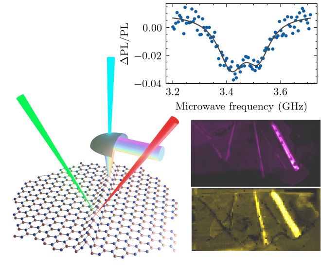https://arxiv.org/abs/2203.10075
David Curie
- Jaron Krogel
- Lukas Cavar
- Abhishek Solanki
- Pramey Upadhyaya
- Tongcan Li
- Yun-Yi Pai
- Michael Chilcolte
- Vasudevan Iyer
- Alex Puretzsky
- Ilia Ivanov
- Mao-Hua Du
- Fernando Robero
- Benjamin Lawrie
Motivation
VB- Spin Defects
- Triplet ground state
(long relaxation) - Emission around 810 nm
@ room temp - Optically Detectable Magnetic Resonance
due to spin-phonon interaction
Caveats
- Only studied with 532 nm laser excitation
Nat. Mater. 19, 540, 2020
 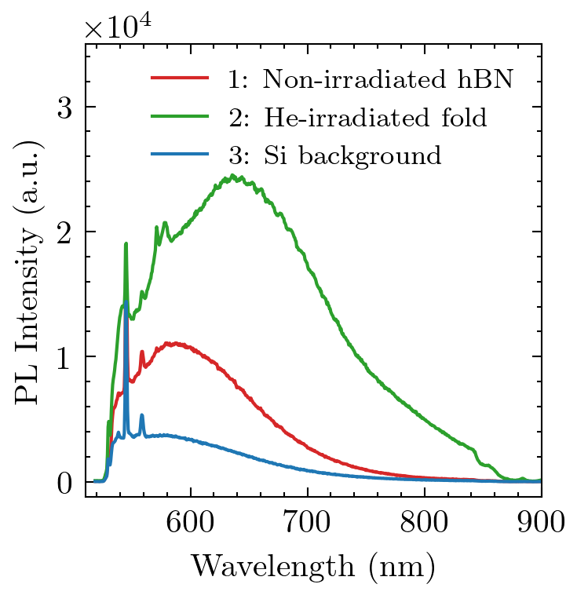
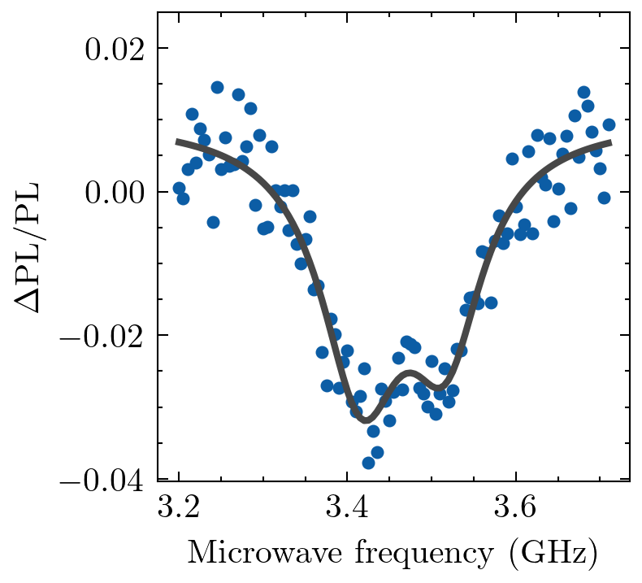
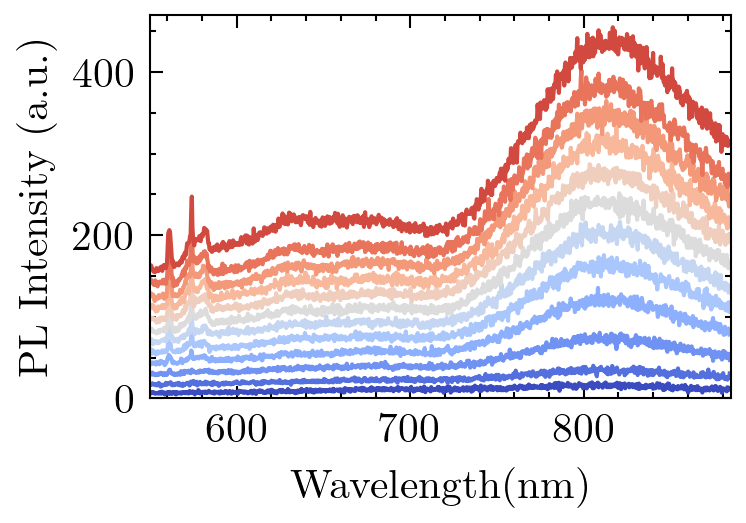
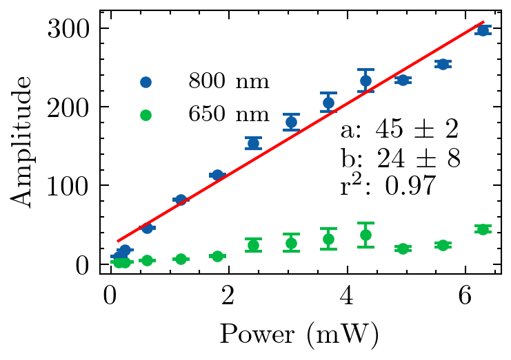
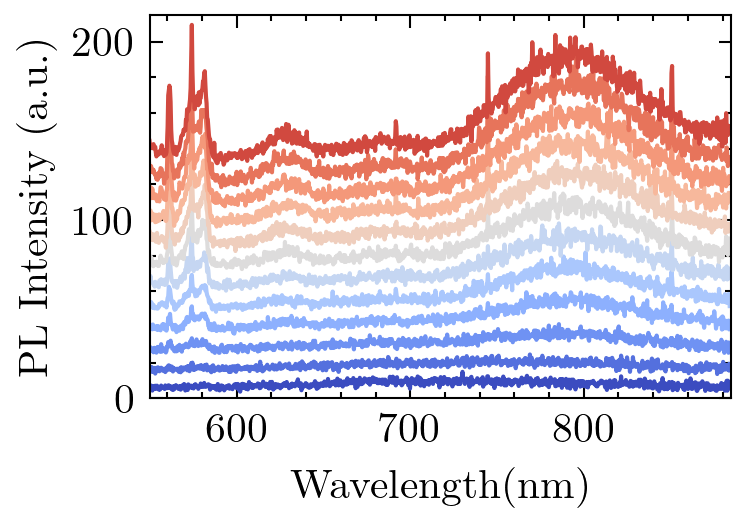
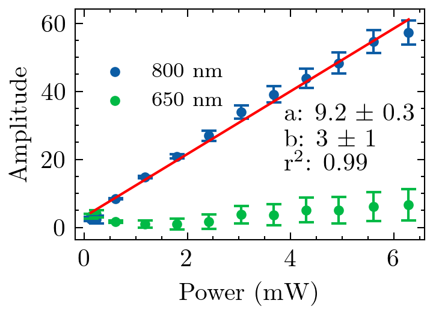
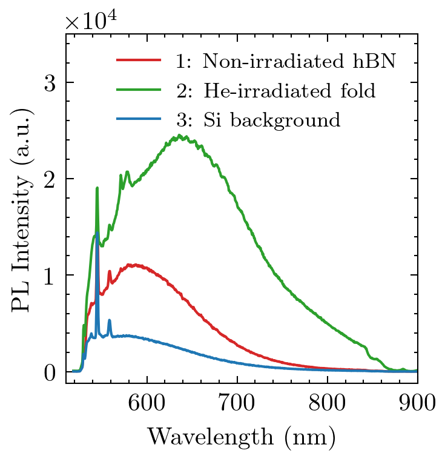
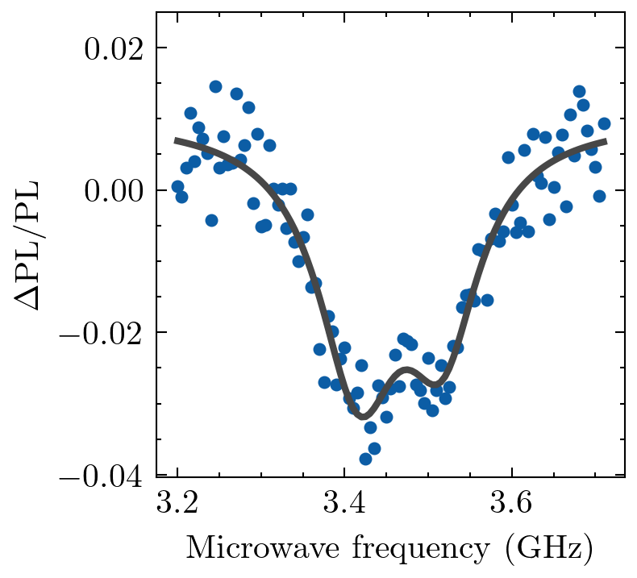
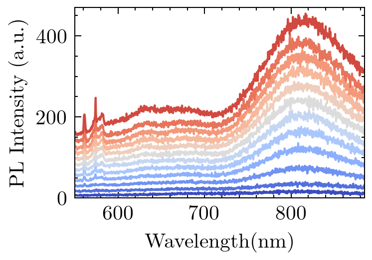
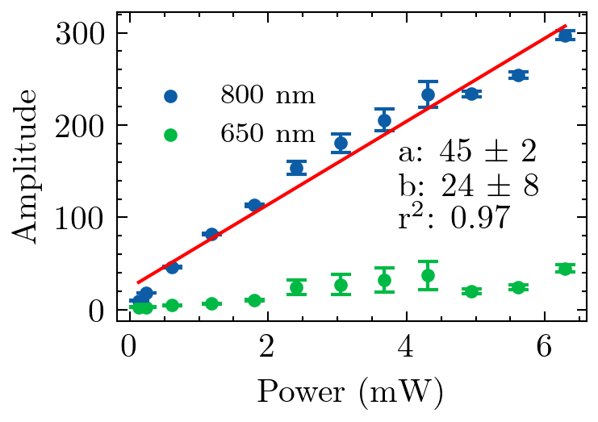
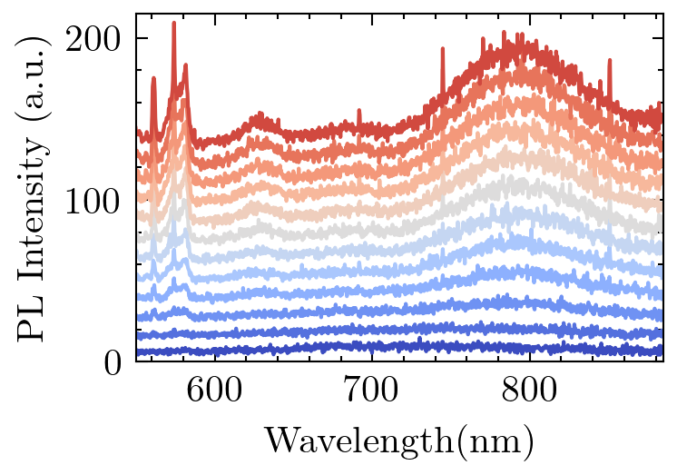
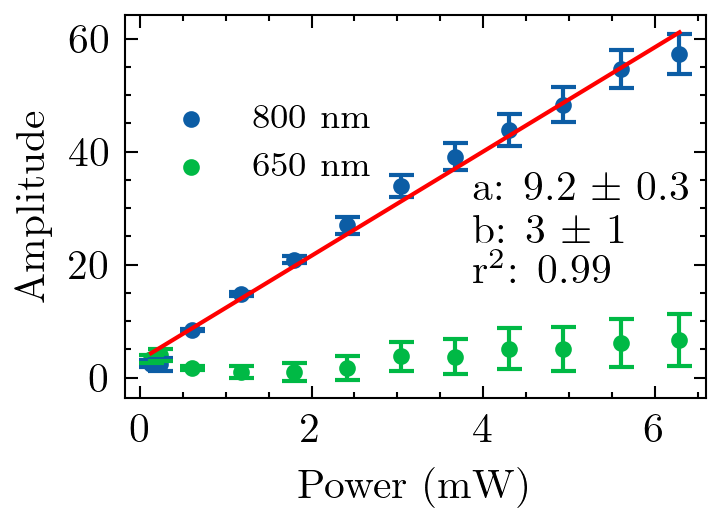
Background
Non-negative Matrix Factorization
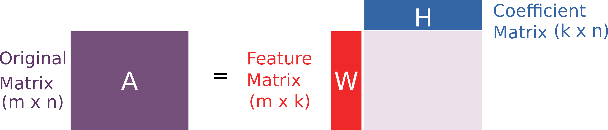Fitting Models
How do we know what is happening?
Example from Luis Serrano
Results
PL NMF
CL NMF
High spatial-resolution line scan
- Vertical projection
- $I(\lambda)$
- Horizontal projection
- $I(x)$
Academic contribution to society
- Existing problem
- Strain is known to enhance emission, but quantitative high-scale mapping of enhancement is desired.
- Our efforts
- CL mapping provides high-spatial resolution data.
- Secondary electrons provide proxy for strain.
- Lingering problems
- Need quantitative measure of strain.
- Future quests
Compressive sensing : under-sampling 3D dataset, using NMF to obtain spectral and spatial features for the missing data.